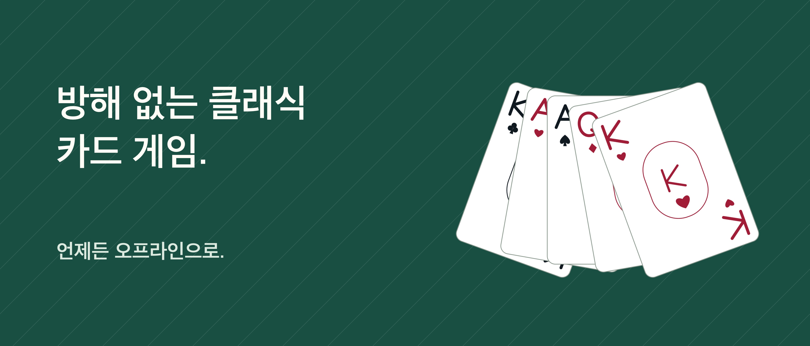

솔리테어 Unbound

카드 한 장씩, 나를 위한 시간.
방해 없이 카드와 함께하는 나만의 시간. 1장 또는 3장씩 뽑는 클론다이크를 광고, IFG 계정, 구독 없이 즐기세요.
되돌리고 다시 시도하세요 실행 취소, 다시 실행, 가능한 이동을 알려주는 힌트는 무료입니다. 카드를 드래그하거나 카드와 목적지를 차례로 탭하세요. 릴랙스에서는 시간을 숨기고, 클래식에서는 시간과 이동 횟수를 표시합니다.
다시 이어 할 수 있는 게임 저장된 게임과 통계는 기기에 남습니다. 무작위 배치나 해법을 검증한 시작 배치를 고르고, 일일 도전에도 참여하세요. 무작위 게임이 항상 풀리는 것은 아니며, 검증된 배치도 선택한 수에 따라 막힐 수 있습니다.
Pro로 더 다양하게 한 번의 구매로 프리셀, 1·2·4무늬 스파이더, 도전 보관함과 추가 꾸미기를 이용할 수 있습니다. 테이블 6개, 카드 뒷면 6개, 앞면 스타일 3개가 포함됩니다. 힌트를 추가로 사거나 소모할 필요는 없습니다.
게임은 오프라인으로 즐길 수 있습니다. Pro 구매와 복원에는 인터넷과 Apple 계정이 필요할 수 있습니다. 진도는 기기 간 동기화되지 않으며 앱을 삭제하면 사라질 수 있습니다. Pro 복원으로 삭제한 진도를 되찾을 수는 없습니다.